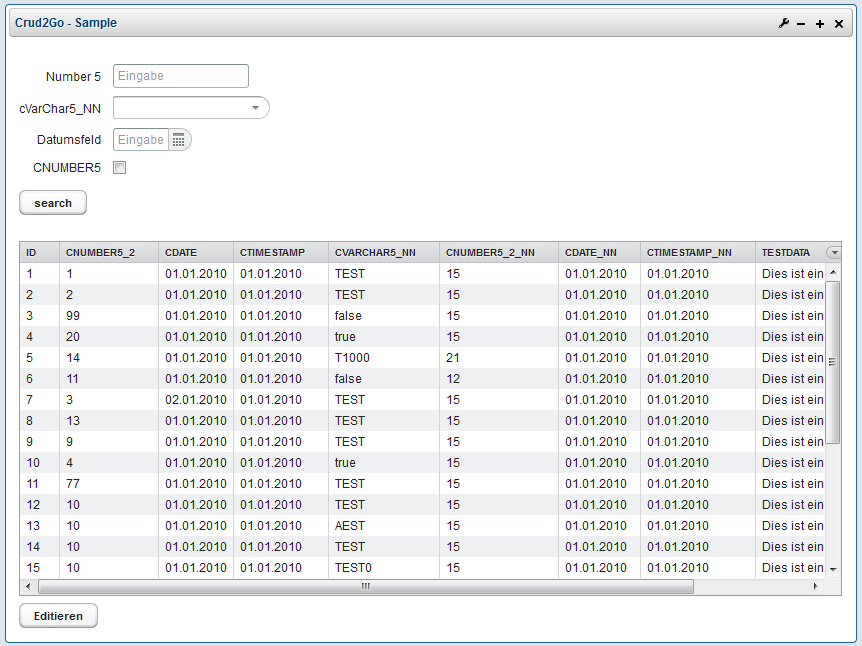
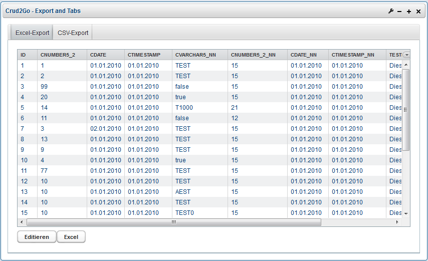
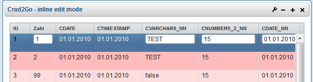
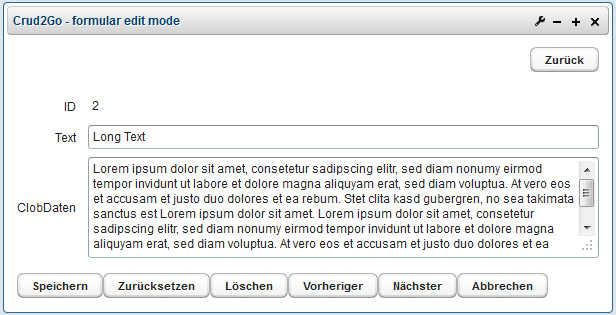
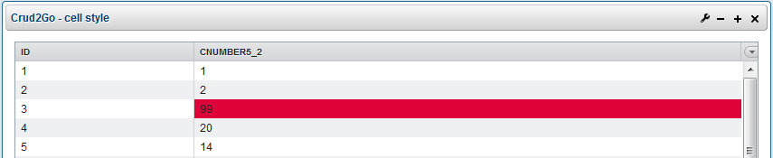

Welcome to Crud2Go Pages.
Crud2Go is an easy to use portlet for crud operations. It has been developed for the usage in a liferay portal using oracle databases(other options under investigation). The portlet implementation is based on vaadin and the configuration is done via xml upload. Possible configuration options are described in the user documentation or in the xsd of the configuration xml. Addtional functionality can be configured in a groovy code block in the config file.Setup
- Download vaadin version XXXX from vaadin homepage
- Extract file
- Replace vaadin jar in {appserver.deploy.dir}\ROOT.war\WEB-INF\lib file with the one downloaded before
- Replace VAADIN dir with the one downloaded before (wie ist das mit widgetset compile ?)
Examples
Example 1: table with filter 
Example 2: table tabs and export functionality 
Example 3: edit modes Inline editing

Form based editing

Example 4: table with special cell style 